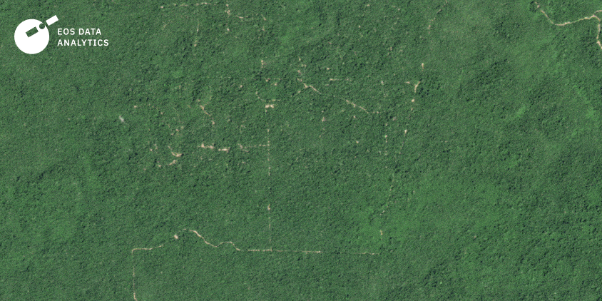
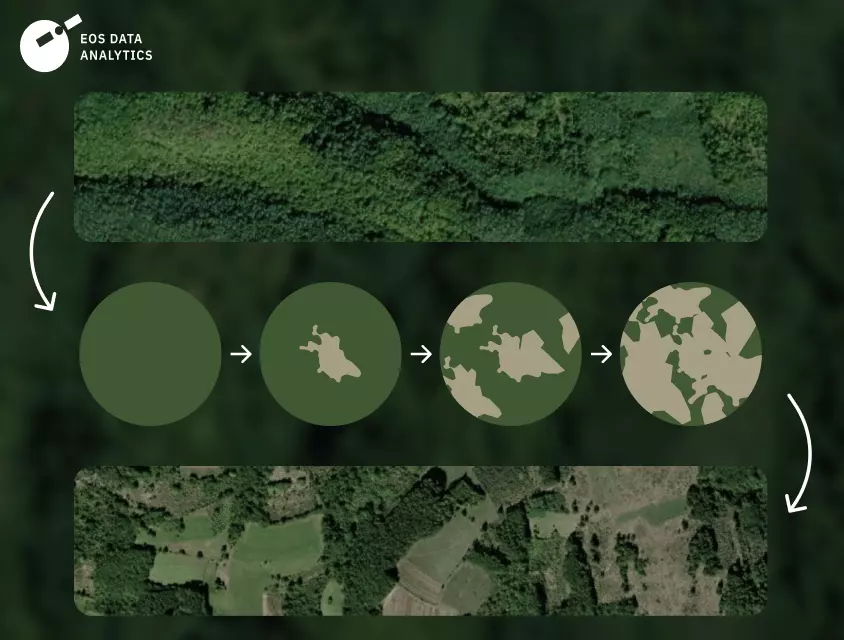
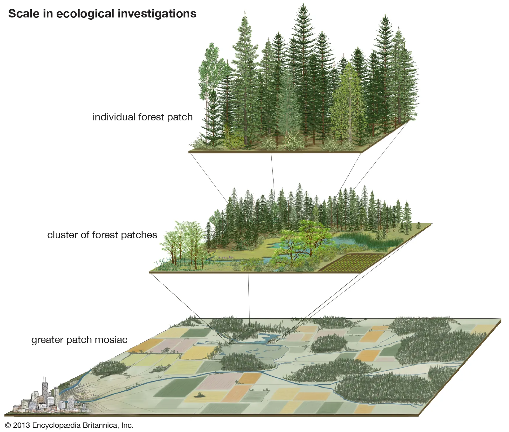
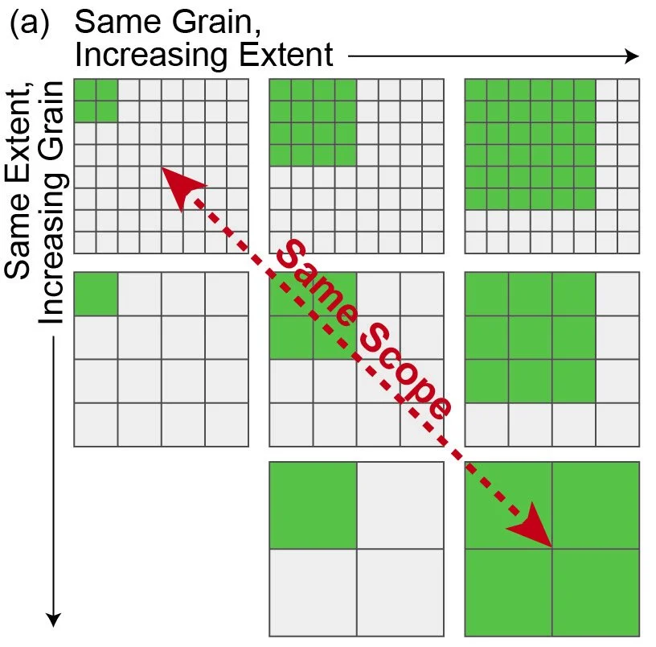
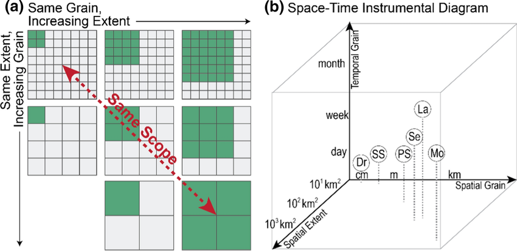
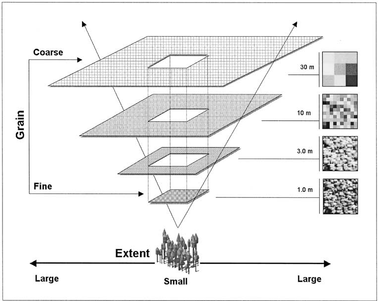
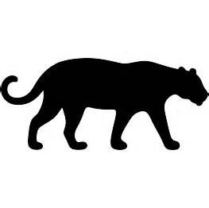
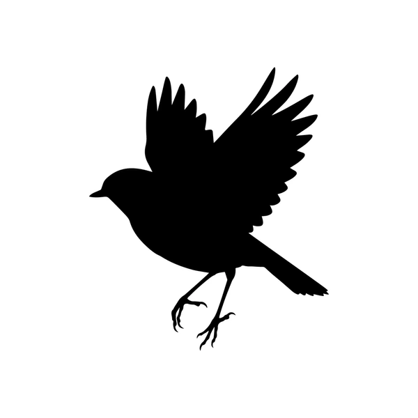
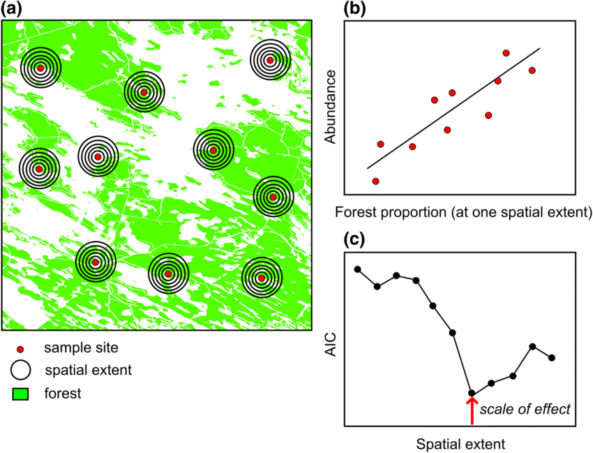

Estrutura do Curso & Origens da Ecologia da Paisagem
Bacharelado em Ciências Biológicas - UFPE
Objetivos do Curso
- Compreender a ecologia da paisagem como o estudo da heterogeneidade espacial e suas causas e consequências biológicas
- Analisar as inter-relações entre o homem e seu espaço de vida, abordando aspectos naturais e culturais
- Capacitar o aluno no uso de métodos quantitativos e ferramentas de SIG para análise espacial
- Aplicar conceitos de conectividade e dinâmica de manchas para a conservação da biodiversidade
- Desenvolver habilidades profissionais em comunicação científica e elaboração de projetos independentes
Orgiens da Ecologia de Paisagem
Carl Troll (1899-1975)

- Carl Troll foi um geógrafo alemão.
- Fusionou conceitos de Geografia e Ecologia
- Criou o termo “Ecologia de Paisagem”
- Pavimentou o caminho para o que hoje conhecemos como uma disciplina com duas principais “escolas”
- Europeia
- Estadunidense
Escolas da Ecologia de Paisagem
| Característica | Abordagem Geográfica (Escola Europeia) | Abordagem Ecológica (Escola Norte-Americana) |
|---|---|---|
| Origem Histórica | Consolidada por volta de 1940, liderada por Carl Troll. | Surgiu na década de 1980, com foco em ecologia espacial. |
| Definição de Paisagem | Entidade espacial e visual total do “espaço vivido pelo homem”. | Área espacialmente heterogênea ou mosaico de ecossistemas interativos. |
| Foco Principal | Holístico e centrado na sociedade; foco na gestão de paisagens. | Centrado na ecologia; busca entender a relação entre o padrão e o processo. |
| Tipo de Paisagem | Predominância de paisagens culturais e antropizadas. | Foco em paisagens naturais ou fragmentos de hábitat. |
| Escala de Análise | Prioritariamente macro-escalas espaciais e temporais. | Escala funcional, definida conforme a percepção da espécie em estudo. |
| Aplicação | Voltada para o planejamento territorial e ordenamento do território. | Voltada para a conservação da biodiversidade e manejo de habitats. |
Uma Síntese Transdisciplinar
A Ecologia de Paisagem pode ser definida como:
“A ciência que estuda a heterogeneidade espacial e a interação entre padrões e processos ecológicos em múltiplas escalas, integrando as dimensões ecológicas (fluxo de energia e espécies) e humanas (influência cultural e gestão territorial) para compreender a dinâmica de mosaicos ambientais.”
Os Pilares da Definição Unificada
- Estrutura (O Mosaico): Refere-se à configuração espacial (fragmentos, corredores e matriz).
- Função (O Fluxo): Analisa como o padrão espacial influencia o que acontece nas paisagens
- Mudança (A Dinâmica): Foca na evolução da paisagem ao longo do tempo

O mosaico heterogêneo

Padrões na paisagem

O conceito de “escala”

Resolução (grão) e Extensão

Resolução (grão) e Extensão

Escala de percepção



Escala do “efeito”

O que devemos saber hoje
- Definir Ecologia de Paisagem
- Entender os “pilares” de uma abordagem de paisagem
- Saber o que é ‘escala’ e ‘resolução’